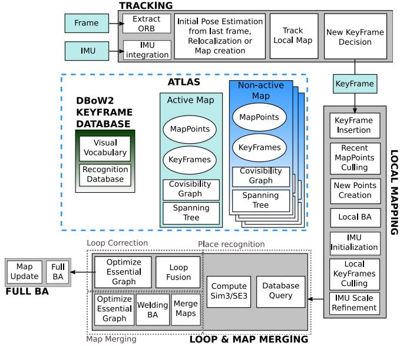
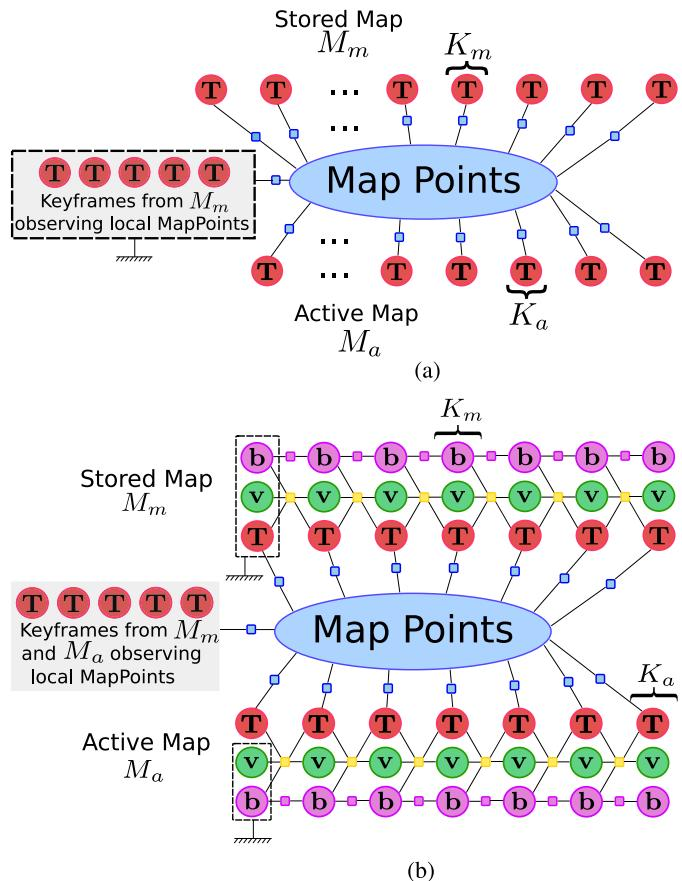
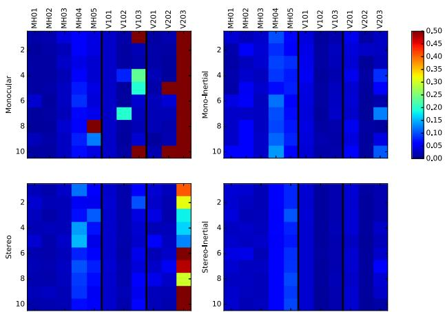
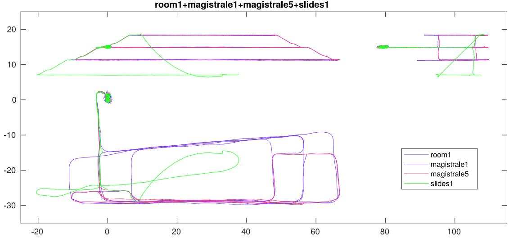
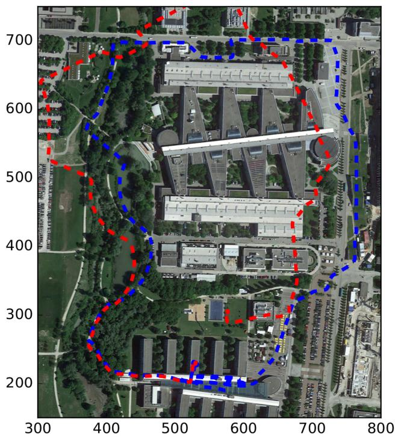

阶段 C · 视觉主干 / Lesson 0045
ORB-SLAM3（2021）：多地图与视觉惯性
跟踪失败不再「全部作废」，并偿还了第二季的 IMU 初始化悬念 🧩
🎯 主题：Atlas 多地图 + 视觉惯性初始化
👥 作者：Campos, Elvira, Gómez Rodríguez, Montiel, Tardós
📅 2021 · ORB-SLAM3: An Accurate Open-Source Library for Visual, Visual–Inertial, and Multimap SLAM
本节目标 读完你应该能：说清 Atlas 如何用「活跃地图 + 非活跃地图」让跟踪失败不再全部作废；讲清地图合并（map merging）与焊接窗口；说出视觉惯性三种融合模式；讲准 IMU 初始化的三步；并列出本篇的关键实验数字与局限。
和前面课程怎么接 本篇把 ORB-SLAM2 再往前推一步。★ 重点偿还 第二季悬念⑤（IMU 初始化） ——0029/0030 预积分教程里明确说那篇论文没有初始化章节，这里第一次给出基于 MAP 估计的快速初始化。预积分项（IMU preintegration）正是 0030 学的东西，下面会显式回链。也接 0014 回环检测综述 （它把 DBoW2 的「三道闸」改成「先几何验证、再局部一致性」以提高召回）。
1. 定位：第一个「视觉 + 视觉惯性 + 多地图」系统
论文摘要开宗明义：ORB-SLAM3 是第一个 能同时做视觉、视觉惯性、多地图 SLAM，且支持单目 / 双目 / RGB-D 与针孔 / 鱼眼镜头模型的系统。它在 ORB-SLAM2 基础上加了两块最关键的拼图：Atlas 多地图表示 与视觉惯性（VI）融合 。
论文还提出一个抽象相机模型：把投影 / 反投影 / 雅可比拆成独立模块，于是 SLAM 代码与相机模型解耦，新增鱼眼（Kannala–Brandt）只需提供这几个函数即可——这是它能支持鱼眼的前提。
2. 核心一：Atlas（地图集）多地图表示
ORB-SLAM2 的逻辑是「丢了就重来」：跟踪失败就丢弃整张地图。ORB-SLAM3 改成：系统维护一个地图集（Atlas） ，里面有一个活跃地图 和若干非活跃地图 。
跟踪线程在活跃地图上实时定位，由局部建图线程持续长大它；
一旦跟踪失败，系统不重置 ，而是新建一个活跃地图（原来的沉为非活跃）；
当识别到当前活跃地图与旧地图有共视区域 时，把两份地图合并（map merging） 成一张，合并后的新地图成为活跃地图。
这比「丢了就重来」好在哪？在长时间、多段采集（multisession）场景下，系统可以「走到哪建到哪」，再回头把分段的地图无缝拼起来——前面建过的地图不会因为中间一段迷路就白费。这正是数据关联的第四种：多地图数据关联 。
Atlas 多地图与地图合并：跟踪失败 ≠ 全部作废
一座办公楼的三段场景
地图 A
地图 B
地图 C
会议室
识别共视
→ 地图合并
焊接窗口
一起优化
同一间会议室被两段都拍到 → 触发合并；合并后一起做局部 BA 把接缝对齐
这张图在画什么： 一座办公楼的三段场景，各自建出的地图用蓝 / 绿 / 橙三色画。中间黄色椭圆是「同一间会议室被两段都拍到」的重叠区域，双箭头表示「识别到共视 → 地图合并 → 焊接窗口一起优化」。怎么看这张图： ① 三块色块是三次（可能跨时间）独立建出的地图；② 黄圈是触发合并的重叠区；③ 紫色箭头说明合并不是简单拼接，还要在焊接窗口做 BA 对齐接缝。要记住的一句话： 跟踪失败 ≠ 全部作废——丢了的地图沉为非活跃，回头重逢时再无缝合并。

原图注（Fig. 1）： Main system components of ORB-SLAM3.（ORB-SLAM3 主要系统组件。）怎么看这张图： ① 与 ORB-SLAM2 Fig.1 平行，但多了 Atlas（地图集）、非活跃地图、以及「tracking 在丢失时去所有 Atlas 地图里重定位」的逻辑；② 注意回环节点在这里同时承担 loop closing 与 map merging；③ 它把本课的 Atlas 多地图与 VI 融合都标在了系统框图上。
3. 核心二：视觉惯性（VI）融合
把 IMU 接进 SLAM，好处是鲁棒性：在纹理缺失、运动模糊、遮挡时，IMU 仍能提供姿态。ORB-SLAM3 提供三种融合模式：
① 纯视觉模式 只用相机，即 ORB-SLAM2 的单目 / 双目 / RGB-D。
② 视觉惯性模式 相机 + IMU，单目惯性 / 双目惯性，IMU 让单目尺度可观、且能抗纹理缺失。
③ 多地图视觉惯性 在 Atlas 之上叠加 VI，地图合并时也带着惯性约束一起优化。
④ 鱼眼 + IMU 借助抽象相机模型，鱼眼镜头也能接 IMU，覆盖大 FOV（接近 / 超过 180°）场景。
在视觉惯性模式下，状态向量除相机位姿外，还多了一项：速度 $\mathbf v_i$、陀螺仪偏置 $\mathbf b_i^g$、加速度计偏置 $\mathbf b_i^a$。这与 0029/0030 预积分教程里讲的「IMU 预积分量 $\Delta \mathbf R, \Delta \mathbf v, \Delta \mathbf p$ 与偏置随机游走」是同一套语言。
4. 关键设计：IMU 初始化（★ 呼应第二季悬念⑤）
★ 这是第二季悬念⑤的第一站。 第二季 0029/0030 预积分教程全文都在讲「给定初始 IMU 参数后如何预积分」，却明确说那篇论文没有初始化章节 ——也就是「最初的尺度、重力方向、偏置到底怎么来」是个缺口。ORB-SLAM3 在这里把它补上了。
它提出一个基于 MAP 估计、分阶段、又快又准的初始化方法（论文 §V-B）：
第一步：纯视觉 MAP 估计。 先跑 2 秒纯单目 SLAM（4 Hz 插 10 个关键帧），得到一张只差一个尺度 的地图（up-to-scale），用视觉 BA 优化（Fig.2(b)）。第二步：纯惯性 MAP 估计。 把视觉轨迹当常数，单独优化惯性变量：尺度 $s$、重力方向旋转 $\mathbf R_{wg}$、IMU 偏置 $\mathbf b$、各帧速度 $\bar{\mathbf v}$（Fig.2(c)）。这一步给出好初值。第三步：视觉–惯性联合 MAP 估计。 把视觉与惯性变量一起联合优化，进一步精修（Fig.2(a)）。
关键成果：2 秒达到 5% 尺度误差，15 秒收敛到 1% 尺度误差 。对比 ORB-SLAM-VI 要 15 秒才出第一个尺度估计、VI-DSO 要 20–30 秒——它快得多，且把「运动足够后解出重力方向与尺度」这件事工程化落地了。
视觉惯性初始化（呼应第二季悬念⑤）
① 静止被拿起
手机
加速度曲线（IMU 在动）
重力方向
② 运动足够后
重力方向
+ 尺度 s 被解出
（5% 误差 @2s）
③ 轨迹有尺度
真实尺度轨迹
（1% 误差 @15s）
图注：这正是第二季 0029 明确说那篇论文缺失的初始化章节——先用纯视觉拿到 up-to-scale 地图，再让 IMU 把尺度与重力方向解出来
这张图在画什么： 一台手机从静止被拿起。左：最初只有 IMU 在动的几秒（加速度曲线 + 重力方向箭头）；中：运动足够后解出重力方向与尺度 $s$；右：位姿轨迹终于有了真实尺度。怎么看这张图： ① 左侧红曲线是 IMU 加速度，绿箭头是重力方向（初始化要解出的量之一）；② 中间蓝圆 + 绿箭头表示「重力方向 + 尺度 s」已被估出；③ 右侧蓝折线是带真实尺度的轨迹。要记住的一句话： 这就是第二季 0029 明确说那篇论文缺失的初始化章节——ORB-SLAM3 用「先视觉、后惯性、再联合」三步把尺度与重力方向解出来。
5. 地图合并的「焊接窗口」与因子图
当两块地图被判定要合并，ORB-SLAM3 不是简单拼接，而是分两步把接缝对齐：
焊接窗口（welding window）组装 ：取 $K_a$ 与 $K_m$ 各自在共视图里的邻域关键帧及它们看到的地图点，把 $M_a$ 用变换 $\mathbf T_{ma}$ 对齐到 $M_m$。合并地图 ：把两份地图熔成一张活跃地图，删重复点。焊接 BA（welding BA） ：对焊接窗口内的所有关键帧与点做局部 BA（Fig.3(a)）；为消 gauge，窗口外但看到这些点的关键帧以固定位姿参与。本质图优化 ：用整张合并地图的本质图做位姿图优化，把焊接窗口的修正传播 到地图其余部分。
★ 视觉惯性版本的焊接 BA（Fig.3(b)）在目标函数里同时含：重投影误差项（蓝） 、IMU 预积分项（黄） 、偏置随机游走项（紫） 。这里的 IMU 预积分正是第二季 0030 学的东西——论文直接把预积分残差 $\mathbf r_{\mathcal T_{i,i+1}}$（含 $\Delta\mathbf R,\Delta\mathbf v,\Delta\mathbf p$ 与协方差）作为因子图的边。下面这张原图把三种因子画得清清楚楚。

原图注（Fig. 3）： Factor graph representation for the welding BA, with reprojection error terms (blue squares), IMU preintegration terms (yellow squares), and bias random walk (purple squares). (a) Visual welding BA. (b) Visual-Inertial welding BA.（焊接 BA 的因子图：重投影项（蓝）、IMU 预积分项（黄）、偏置随机游走（紫）。(a) 视觉焊接 BA；(b) 视觉惯性焊接 BA。）怎么看这张图： ① 蓝色方块＝重投影误差因子（连接相机与 3D 点）；② 黄色方块＝IMU 预积分因子（连接相邻关键帧，正是 0030 学的预积分量）；③ 紫色方块＝偏置随机游走因子。(b) 比 (a) 多了黄、紫两类惯性因子。
6. 实验数字
平台：i7-7700 CPU 3.6 GHz + 32 GB，只用 CPU。所有结果报中位（EuRoC 10 次、TUM-VI 3 次、多会话 5 次）。挑硬数字：
EuRoC 单会话（Table II，RMS ATE，m） ：ORB-SLAM3 四种配置都优于文献最佳。单目 0.041*、双目 0.044*、单目惯性 0.041*、双目惯性 0.044*（带 * 表示部分序列未完成的均值）。在单目惯性配置下比 MSCKF/OKVIS/ROVIO 准 5–10 倍，比 VI-DSO/VINS-Mono 准 2 倍以上。EuRoC 每序列 10 次运行（Fig. 4 彩色方块） ：每张图用颜色标出 10 次运行的 rms ATE，方差小说明系统稳。V103 单目、V203 双目这些 ORB-SLAM2 解不了的序列，ORB-SLAM3 多数能解——多地图兜底了快速运动丢失。与 VINS-Mono 对比 ：单会话准 2.6 倍，多会话（multisession）优势扩大到 3.2 倍 ——这就是地图合并的回报。TUM-VI 多会话（Fig. 5/6） ：说明「多地图 + 地图合并」在长时间 / 多段采集上的价值。室外序列 outdoors1 单会话处理漂移约 60 m，但若在 magistrale2 之后以多会话方式处理，漂移被显著减小。室内 AR/VR 房间序列（Table IV） ：双目惯性平均 RMS ATE 约 0.009 m（9 mm ）；即摘要所说「quick hand-held motions in the room of TUM-VI 下 9 mm」。运行时间（Table VI/VII） ：实时 30–40 帧、3–6 关键帧/秒；回环 / 地图合并各步低于 1 秒，full BA 可能数秒，但都在独立线程、不阻塞实时。

原图注（Fig. 4）： Colored squares represent the rms ATE for ten different executions in each sequence of the EuRoC dataset.（彩色方块代表 EuRoC 各序列 10 次运行得到的 rms ATE。）怎么看这张图： ① 每个方块是一次运行的一个序列误差，颜色编码大小；② 颜色越一致、越浅＝系统越稳；③ 与 DSO/ROVIO/VI-DSO 发布的图对照，ORB-SLAM3 明显更稳更准。

原图注（Fig. 5）： Multisession stereo-inertial result with several sequences from TUM-VI dataset (front, side, and top views).（TUM-VI 数据集多会话双目惯性结果，含前 / 侧 / 顶三视图。）怎么看这张图： ① 同一建筑内多段序列拼接成一张大地图；② 小房间序列提供的回环（在长序列里缺失）把整体误差拉到厘米级；③ 这就是「多地图 + 地图合并」在长时间采集上的价值可视化。

原图注（Fig. 6）： Multisession stereo-inertial. In red, the trajectory estimated after singlesession processing of outdoors1. In blue, multisession processing of magistrale2 first and then outdoors1.（多会话双目惯性；红＝outdoors1 单会话处理结果；蓝＝先 magistrale2 再以多会话处理 outdoors1。）怎么看这张图： ① 红轨迹（单会话）漂移明显（≈60 m）；② 蓝轨迹（多会话）漂移被显著减小；③ 直观说明地图合并如何利用先前地图纠正长序列漂移。
互动判断
ORB-SLAM3 的 Atlas 在跟踪失败时，默认怎么处理？
新建地图待合并
丢弃全部重来
7. 局限与衔接
论文 §VIII 明确承认的主要失败情形：
① 低纹理环境 这是主要失败模式。直接法对低纹理更鲁棒，但只做短/中期数据关联；特征法能解长期/多地图关联，却在低纹理下跟踪变弱。
② 慢运动 / 缺横滚俯仰 如平地上行驶的汽车，IMU 难初始化；若可能，改用双目 SLAM，或用单目深度 CNN。
③ 纯旋转探索 探索中若只有纯旋转，无法估计深度（单目尤其明显）。
④ 室外远点漂移 TUM-VI 室外序列受云天空远点影响，惯性参数（尺度、加速度偏置）可能漂到 10–70 m，但仍是该序列最佳。
★ 收束与承接： 本课偿还了第二季悬念⑤（IMU 初始化） ——0029/0030 预积分教程里缺失的初始化章节，在这里以「视觉→惯性→联合」三步 MAP 估计补齐，并复用 0030 的预积分因子（Fig.3 的黄/紫方块）。同时，它把 0014 回环检测综述的「假阳性铁律」升级为「先几何验证、再局部一致性」以提高召回——代价是多地图下不再轻易产生重复区域。下一课（0046 DTAM 2011）将转向第三季另一条主线：稠密直接法 ，与 ORB 这套特征法形成对照。
课后练习
Atlas 多地图表示由哪两部分组成？跟踪失败时它比 ORB-SLAM2 好在哪？
展开查看答案 Atlas = 一个活跃地图 + 若干非活跃地图。跟踪失败时它不重置，而是新建活跃地图、旧地图沉为非活跃；重访共视区域时再无缝合并。好处：长时间/多段采集下前面建的地图不浪费，多会话精度显著优于「丢了就重来」。
视觉惯性融合有哪三种模式？IMU 给单目带来了什么关键量？
展开查看答案 三种：纯视觉、视觉惯性、多地图视觉惯性（外加鱼眼+IMU 组合）。IMU 让单目尺度可观、并能在纹理缺失/运动模糊/遮挡时提供姿态，大幅提升鲁棒性。
IMU 初始化分哪三步？它偿还了第二季的哪个悬念？最终尺度误差是多少？
展开查看答案 三步：① 纯视觉 MAP（2 秒 up-to-scale 地图）；② 纯惯性 MAP（解尺度 s、重力方向、偏置、速度）；③ 视觉-惯性联合 MAP。它偿还了第二季悬念⑤（IMU 初始化，0029/0030 那篇论文缺的章节）。最终 2 秒 5% 尺度误差、15 秒收敛到 1%。
地图合并的「焊接窗口」做什么？Fig.3 的因子图里三种方块各代表什么？
展开查看答案 焊接窗口取两块地图在共视图邻域的关键帧与点，先做局部 BA（welding BA）对齐接缝，再用本质图优化把修正传播到全图。Fig.3 三色方块：蓝＝重投影误差项，黄＝IMU 预积分项（即 0030 学的预积分量），紫＝偏置随机游走项。
论文承认的主要局限有哪些？举出至少三条。
展开查看答案 ① 低纹理环境是主要失败模式；② 慢运动/缺横滚俯仰（如平地汽车）IMU 难初始化；③ 纯旋转探索无法估深度；④ 室外远点可能导致惯性参数漂移（10–70 m）。